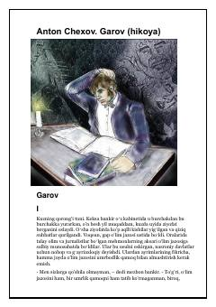

GYosh yurist ozodligini tikib, o'n besh yillik yolg'izlikka rozi bo'ladi.
Anton Chexovning 'Garov' hikoyasida keksa bankir o'n besh yil oldin o'ynalgan g'alati garovni eslaydi: yosh yurist ozodligini tikib, o'n besh yil yolg'iz qamoqda o'tirishga rozi bo'ladi. Hikoya ozodlik, hayotning ma'nosi va insoniy qadriyatlar haqida chuqur falsafiy mulohazalarni o'z ichiga oladi.